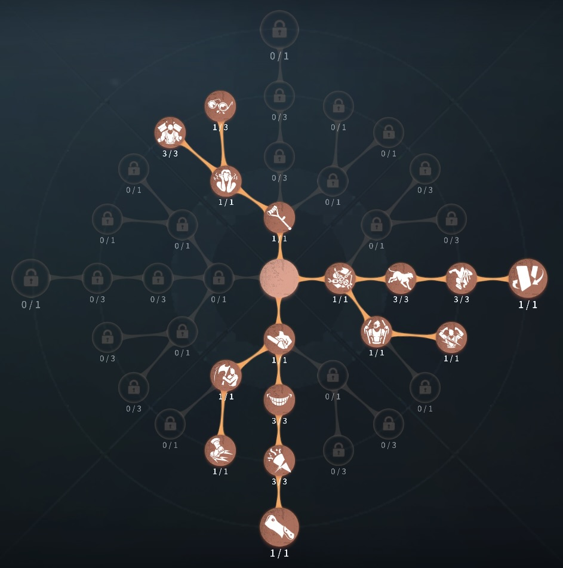

書記官（キーガン）の評価
サバイバーの行動を記録し翻弄する
外在特質とスキル
存在感0：記録、宣告、宣告方式、審査
・記録:・サバイバーまたは自身を選択すると、10秒間対象の移動ルートと操作行為を記録することができる。記録は再度タップで終了することができ、そのシーンを収納する。最大3つのシーンを保存できる。記録中のサバイバーの板窓操作速度20％低下。サバイバーのシーンは一度に2つ記録される
・操作行為:
板窓の操作、暗号機解読、ゲートを開く、ハンターの攻撃、ハンターが異常を使用。
・宣告:
・記録したシーンを長押しで任意位置でシーンの内容を再生させることができる。タップでは記録した場所で再生される。攻撃、異常の記録の効果は半減し恐怖の一撃を与えない。
・宣告方式:
・宣告方式を切り替えることができ、シーンを再生または逆再生で再生できる。
・審査:
・6秒間未解読の暗号機、サバイバーが拘束されているロケットチェア、開放可能なゲートを選択でき、その位置を見ることができる。この視点内で記録と宣告を使用することができる。審査中でも自身は攻撃、移動ができる。
存在感1：無効
・記録中に操作された板や窓などは、記録終了後9秒間サバイバーが操作できなくなる。存在感2：証拠認定
・自動的にシーン内の操作に繋がらない無駄なルートを削除する。ハンターの立ち回り方
1. 初動の立ち回り
書記官は妨害性能が高いものの、コピーによる攻撃は当てるのが難しく、連発しにくいため攻撃性能は控えめな部類に入る。初動のチェイスは「神出鬼没」に頼るのが無難。
・初動の立ち回り:
✅
徒歩ハンターなのでデススポーンへ向かうのも選択肢だが、記録を上手く使える自信があるならば強ポジを狙うのもあり。ただし、記録を利用して誰もいない強ポジの板を壊して弱体化を狙う余裕はない。基本的にはサバイバーの記録を取り、動きを把握しつつ、逆再生で板を無力化するのが理想。自身の記録は板割り・窓越えなどを順回しで使用しよう。特に板割り・攻撃は順回しでなければ無駄になってしまう点に注意。コピー攻撃の使い方に自信がある場合は、「神出鬼没」を切って他の補助特質を選ぶのもあり。
・コピー攻撃のコツ:
✅サバイバーが板窓を操作すれば本体の攻撃を回避できる状況で、板窓にコピー攻撃を仕掛ける。「コピー攻撃を回避すると本体の攻撃やマップギミック（電車など）に当たる」状況を作ると有効。軍需工場や聖心病院の強ポジのようにチェイスルートが一周する場所では、コピー攻撃の矢印をサバイバーの死角から出す。月の河公園のジェットコースター発車直後は、コピー攻撃でサバイバーを叩き落とせる。矢印の視認性を利用し、サバイバーの動きを誘導する。
逆再生でも攻撃判定はあるが、範囲が狭いため基本は再生で攻撃。
2. スキルの使い方
書記官のスキルは、記録の使い方で試合が決まる
・記録の活用:
・スマホ版では誤爆が起こりやすいので、設定から操作をカスタムしておくこと。記録中は、サバイバーの板倒し・窓越えの最中に収録を終えることで、逆再生時のラグを減らせる。自身の板破壊・窓越え中に記録を開始し、すぐに止めるとスムーズに使える。攻撃の記録は振り終えると自動で収録が止まる。
・記録の再生・逆再生の切り替えミスに注意:
・逆再生で解読進捗を下げるつもりが、再生で進捗を上げてしまうミスが発生しやすい。板を倒すつもりで再生したのに、逆再生で戻してしまう事故も多発。
・コピーの操作:
・タップで撮影位置にコピーを再生。長押しで任意の場所にコピーを再生。解読妨害はタップ、別の暗号機の妨害は長押しと使い分ける。
3. チェイス中の立ち回り
書記官のチェイスは、記録を再生するタイミングと通常攻撃の当たり判定の理解。
・記録の再生:
基本はサバイバーの記録を逆回しして板を無力化。本体は板割りや窓越えを順回しで使用。
板窓でサバイバーが回避を狙う際にコピー攻撃を仕掛ける。視界の悪い位置や強ポジで矢印を隠しつつコピー攻撃を仕掛ける。
・通常攻撃の判定:
書記官は通常攻撃の判定がでかいため、通常攻撃の当たり判定を理解しておくことが大事になる。
また、ため攻撃の判定もでかいため理解しておく。
4. 救助狩りの立ち回り
救助狩り性能は低めなので、基本は解読妨害に専念。
・基本の救助狩り:
・記録攻撃中に本体が接近し、恐怖の一撃を狙うのが理想。
5. 注意点
書記官を使う際には、以下の点に注意しましょう。
🔹 異常の活用
→
コピーの異常は効果が半減する点に注意。通電後に備え、異常に切り替えたコピーを連続で発動する戦法も可能。
🔹 通電後の動き
→
審査を利用しながらゲート解読を妨害。可能なら瞬間移動を備えておく。通電後に記録のストックがある場合、コピー攻撃をゲート前に仕掛けると有効。「引き留める」発動中のコピー攻撃は強力。記録のストックがない場合は、瞬間移動を直接仕掛ける。ゲート開門を阻止するため、記録の対象を正しく選ぶ操作に慣れておくこと。
おすすめの内在人格
裏向きカード型人格
この内在人格は、中毒症と怒りで粘着を対処し、衝動でため攻撃を加速させた人格


みんなのコメント